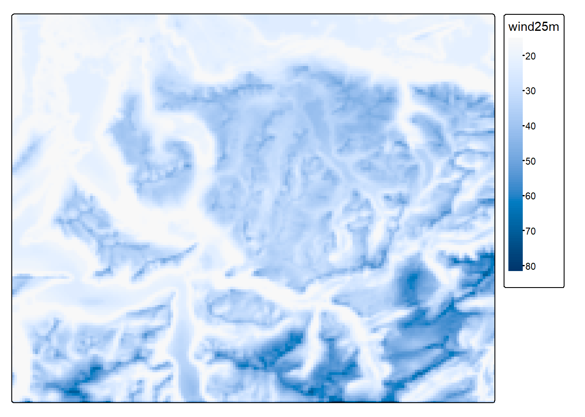
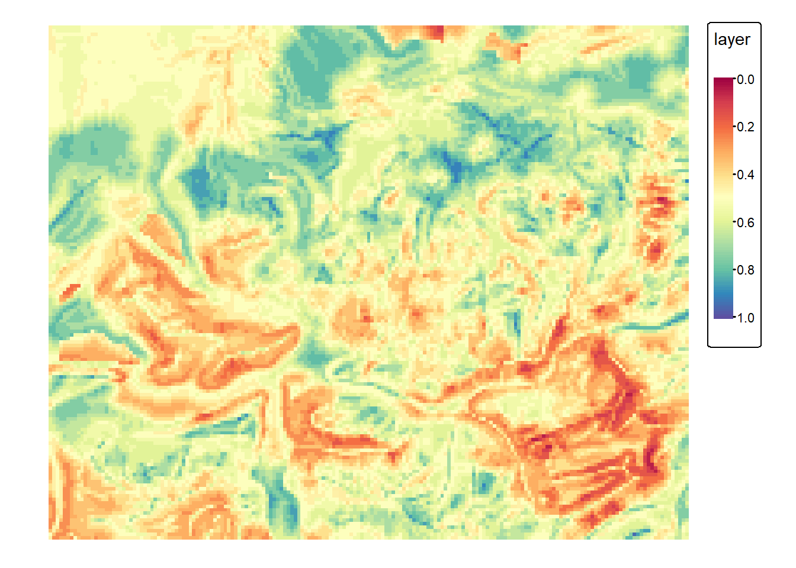

Rauman 5: Übung B
In der letzten Übung (Übung A) haben wir die potentielle Standorte für Windkraftanlagen hinsichtlich zweier Distanzkriterien bewertet. In dieser Übung (Übung B) schliessen wir die Multikriterien-Evaluation ab, indem wir:
- Windgeschwindigkeit und Hangneigung mitberücksichtigen
- die Ausschlusskriterien vom Resultat ausschliessen
Für Punkt 1 müssen wir zusätzliche Daten einlesen, die im Rasterformat daherkommen. Punkt 2 beruht im Wesentlichen auf Daten, die wir bereits verwendet haben.
Aufgabe 1: Rasterdaten einlesen
Zur Bewertung der Standorte hinsichtlich Windgeschwindigkeit steht uns der Datensatz wind250m.tif zur Verfügung (siehe Tabelle 34.1). Lade den Datensatz mit der Funktion rast() in R ein. Exploriere den Datensatz visuell und versuche ein Verständnis für die Datensätze zu bekommen.
Aufgabe 2: Wind bewerten
Diese Rasterdaten müssen wir nicht weiter verarbeiten, wir können sie direkt bewerten. Führe diese Bewertung aufgrund nachstehender Tabelle durch. Nutze dafür die Funktion classify() analog Aufgabe 3: Distanzkriterien bewerten. Ihr könnt die Schwellenwerte frei wählen, wir werden diejenigen verwenden, die in Tabelle 35.1 festgehalten sind.
Aufgabe 3: Slope berechnen und bewerten
Für die Berechnung und anschliessende Bewertung der Hangneigung brauchen wir ein Höhenmodell. Lade das Höhenmodell dhm250m.tif herunter (siehe Tabelle 34.1) und in R ein. Berechne anschliessend die Hangneigung mit der Funktion terrain() analog Aufgabe 2 (beachte die Einheit des Output!).
Bewerte die Hangneigung danach gemäss Tabelle Tabelle 35.1.
Windgeschwindigkeit
|
Hangneigung
|
||||
|---|---|---|---|---|---|
| von | bis | zu | von | bis | zu |
| 0 | 20 | 0.0 | 0 | 4 | 1.0 |
| 20 | 30 | 0.2 | 4 | 8 | 0.8 |
| 30 | 40 | 0.4 | 8 | 12 | 0.6 |
| 40 | 50 | 0.6 | 12 | 16 | 0.4 |
| 50 | 60 | 0.8 | 16 | 20 | 0.2 |
| 60 | Inf | 1.0 | 20 | 90 | 0.0 |
Aufgabe 4: Raster Overlay
Analog Aufgabe 4: Raster Overlay können wir an dieser Stelle eine vorläufige Beurteilung der Gebiete durchführen. Berechne dafür ein (gewichtetes) Mittel der Kriterien strassen_classify, schutzgebiete_classify, wind_classify und neigung_classify. Du kannst die Gewichte wieder so anpassen, wie du für sinnvoll hälst.

Aufgabe 5: Ausschlusskriterien
Als Auschlussgebiete gelten Flächen, wo keine Windkraftanlagen gebaut werden können. Dazu gehören bewohnte Flächen, nationale Schutzgebiete, Waldgebiete und Seen. (Zwar werden Schutzgebiete in unserer Analyse bereits berücksichtigt, aber nicht kategorisch vom Resultat ausgeschlossen.)
Um diese Flächen aus unserem Resultat auzuschliessen, können wir wieder die Funktion mask() verwenden (siehe Aufgabe 5: Mask Raster). Doch diesmal möchten wir nicht die Flächen ausserhalb der Polygone mit NA ersetzen, sondern die Flächen innerhalb der Polygone. Deshalb verwenden wir mask() mit dem Argument inverse = TRUE.
Versuche mit mask(), den oben erwähnten Vektordatensätze sowie der Option inverse = TRUE die Ausschlussgebiete vom Raster-Overlay zu entfernen und visualisiere das Resultat.